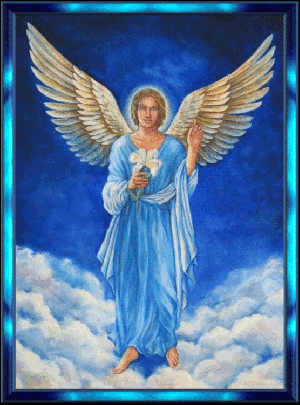
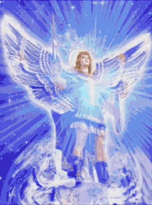
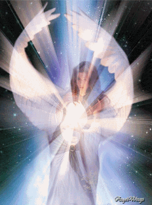
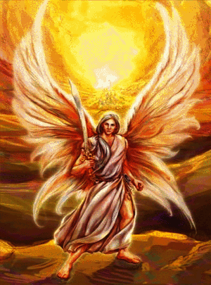

Videos dos Arcanjos de Deus
Foram criados para serem os nossos professores Divinos, para nos ensinarem, inspirarem e para mostrar-nos
como podemos trazer para a nossa energia pessoal as qualidades que a verdade em Deus proporciona.



